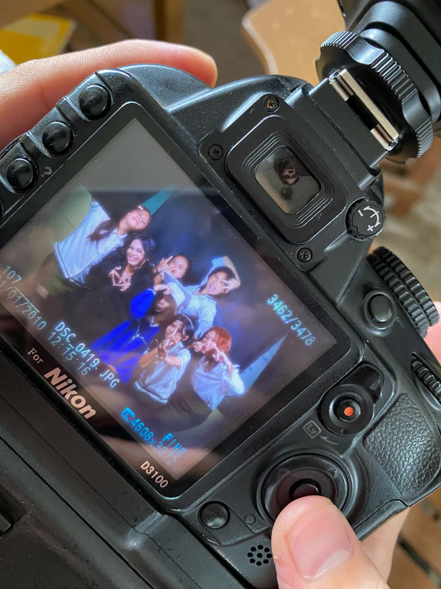
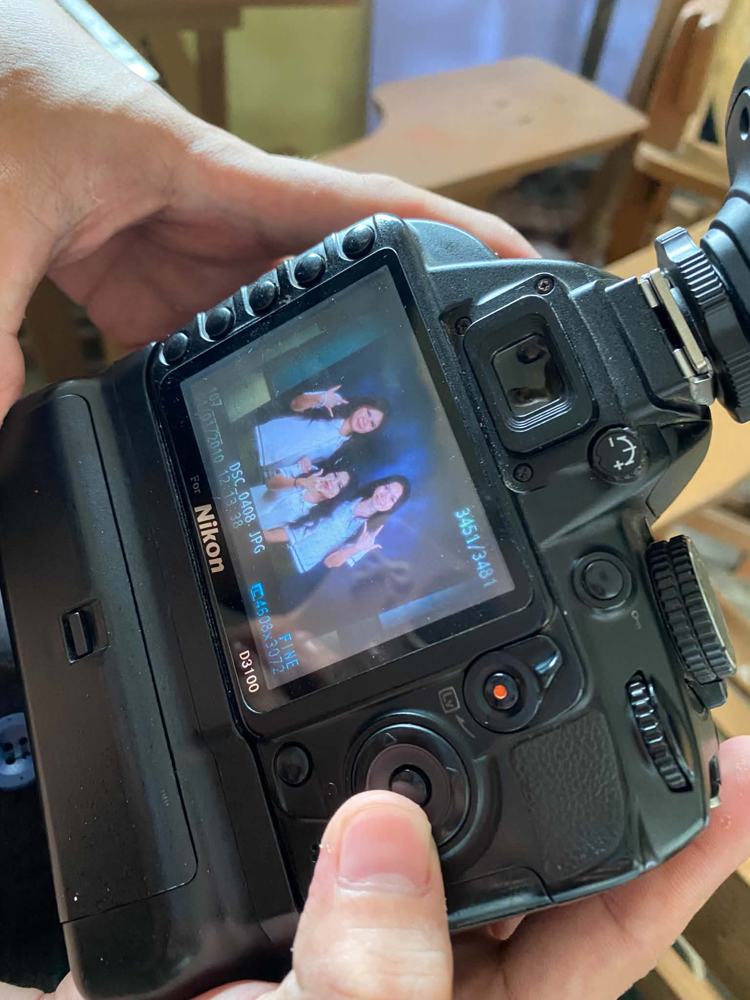

MY DOG
PEOPLE I MET, MEMORIES I KEPT


School is more than just a place where we study, attend classes, and complete assignments.
It is also a place where we meet people who can become an important part of our lives.
Some people
we meet may only stay for a short time, while others leave memories that we carry
with us for
a long time. For me, my friends are some of the people
I met who gave me memories I will always keep.
At first, we were not really close. We had different lives, interests, and personalities.
As we spent more time together, we slowly got to know each other better. We became
more comfortable with each other and started to build a strong friendship. Without realizing it,
those ordinary days became some of my favorite memories.
MY FAVORITE MEMORIES
- Bonding with each other
- Talking about random things
- Joking around
- Laughing together
- Eating together
- Helping each other
- Taking pictures
- Making unforgettable memories
Our friendship is not always perfect. There are times when we
have misunderstandings, arguments, and moments when we get angry with each other.
We may say things we do not mean or have different opinions. But at the end
of the day, we learn to forgive each other and move forward. We choose our friendship
over our pride because we know that what we have is more important than a temporary disagreement.
Through our friendship, I learned that true friends do not have to be perfect.
We can fight, disagree, and get hurt, but what matters is that we are willing to understand
and forgive each other. Our friendship becomes stronger because we choose to
stay, even after the misunderstandings.
DIFFERENT PERSONALITIES, ONE CIRCLE OF FRIENDS
- Funny
- Playful
- Cheerful
- Understanding Person
- Hardworking
- Motivate each other
Visit My Old School Days